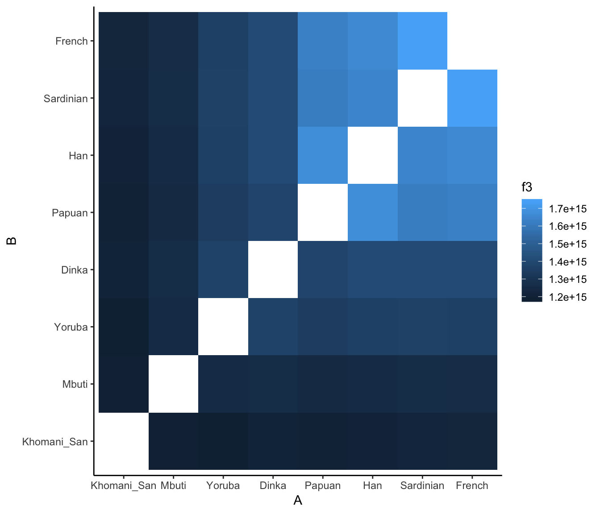

This vignette describes how to calculate various population admixture statistics (\(D\), \(f_4\), etc.) using the admixr package. It assumes that you already know a little bit about them, because we don’t have enough space to go into details of how and why they work. If you want to learn more and are not afraid of little bit of math, I highly recommend Benjamin Peter’s wonderful overview of the subject and Nick Patterson’s original ADMIXTOOLS paper.
Introduction
ADMIXTOOLS is a widely used software package for calculating admixture statistics and testing population admixture hypotheses. However, although powerful and comprehensive, it is not really user-friendly.
A typical ADMIXTOOLS workflow usually involves a combination of sed/awk/shell scripting and manual editing to create different configuration files. These are then passed as command-line arguments to one of ADMIXTOOLS’ commands, and control how to run a particular analysis. The results are then redirected to another file, and the user needs to extract values of interest from this file (which is full of redundant information), often using additional command-line utilities, or (worse) by manual copy-pasting. The processed results are then analysed in R, Excel or another program.
This workflow is very cumbersome, especially if one wants to explore many hypotheses involving different combinations of populations. Most importantly, however, it makes it difficult to follow good practices of reproducible science, as it is nearly impossible to construct reproducible automated “pipelines”.
This R package makes it possible to perform all stages of ADMIXTOOLS analyses entirely from within R. It provides a set of convenient functions that completely remove the need for “low level” configuration of individual ADMIXTOOLS programs, allowing users to focus on the analysis itself.
Installation
To install admixr from GitHub you need to install the package devtools first. To do this, you can simply run (in R):
Furthermore, if you want to follow the examples in this vignette, you will need the tidyverse collection of packages for convenient data analysis, which you can install with:
When everything is ready, you can load both packages:
library(admixr)
library(tidyverse)
#> ── Attaching packages ─────────────────────────────────────────────────── tidyverse 1.2.1 ──
#> ✔ ggplot2 3.0.0 ✔ purrr 0.2.5
#> ✔ tibble 1.4.2 ✔ dplyr 0.7.6
#> ✔ tidyr 0.8.1 ✔ stringr 1.3.1
#> ✔ readr 1.1.1 ✔ forcats 0.3.0
#> ── Conflicts ────────────────────────────────────────────────────── tidyverse_conflicts() ──
#> ✖ dplyr::filter() masks stats::filter()
#> ✖ dplyr::lag() masks stats::lag()Note that in order to run admixr analyses, you need a working installation of ADMIXTOOLS! Explaining how to compile it is beyond the scope of this document, but you can find help here. Furthermore, you need to make sure that R can find ADMIXTOOLS binaries on the $PATH. If this is not the case, running library(admixr) will show a warning message with instructions on how to fix this.
A note about EIGENSTRAT files
If you have an EIGENSTRAT “triplet” of files ready, and just want to know how to calculate different admixture statistics, feel free to skip this section.
EIGENSTRAT file format
ADMIXTOOLS software uses a peculiar set of genetic file formats, which seem strange if you are used to working with VCF files. However, the basic idea remains the same - we want to store and access SNP data (REF/ALT alleles) of a set of individuals at a defined set of genomic positions.
EIGENSTRAT data sets always contain three kinds of files:
-
indfile - specifies name, sex and population assignment of each sample -
snpfile - specifies positions of SNPs, REF/ALT alleles etc. -
genofile - specifies SNP data (one row per site) in a dense string-based format:- 0: individual is homozygous ALT
- 1: individual is a heterozygote
- 2: individual is homozygous REF
- 9: missing data
As you can see, a VCF file is essentially a combination of all three files in a single file. Luckily for us, all three EIGENSTRAT files usually share a common path and prefix (at least you should try to make it so whenever you work with them). This allows us to work with just the prefix, instead of worrying about individual files.
As such, all main admixr functions accept a prefix argument, which specifies the path and prefix of all three EIGENSTRAT files (you can still work with individual files if you need to, using ind, snp and geno arguments of each admixr function, but try to avoid that, as it makes your code mode verbose).
Here is a prefix of a small testing SNP data set that’s distributed with admixr. We will be using this data set in the rest of this vignette.
(eigenstrat <- file.path(system.file(package = "admixr", "extdata"), "snps"))
#> [1] "/Users/martin_petr/local/R_LIBS/admixr/extdata/snps"We can verify that there are three files with this prefix, as they should be:
dir(path = dirname(eigenstrat), full.names = TRUE)
#> [1] "/Users/martin_petr/local/R_LIBS/admixr/extdata/snps.geno"
#> [2] "/Users/martin_petr/local/R_LIBS/admixr/extdata/snps.ind"
#> [3] "/Users/martin_petr/local/R_LIBS/admixr/extdata/snps.snp"Let’s look at their contents.
ind file
#> Chimp U Chimp
#> Mbuti U Mbuti
#> Yoruba U Yoruba
#> Dai U Dai
#> Khomani_San U Khomani_San
#> Han U Han
#> Dinka U Dinka
#> Sardinian U Sardinian
#> Papuan U Papuan
#> French U French
#> Vindija U Vindija
#> Altai U Altai
#> Denisova U DenisovaThe first column (individual ID) and the third column (population label) are generally not the same (individual IDs often having numerical suffixes, etc.), but are the same here for simplicity. Importantly, when specifying population/sample arguments in admixr functions, the information in the third column is what is used. For example, if you have individuals such as “French1”, “French2”, “French3” in the first column, all three sharing a “French” population label in the third column, specifying “French” in an admixr command will combine all three samples in a single population, and will calculate allele frequency from all of them.
Philosophy of admixr
The goal of admixr is to make ADMIXTOOLS analyses as trivial to perform as possible, without having to worry about par/pop/left/right configuration files (as they are known in ADMIXTOOLS’ jargon) and other low-level details.
The only interface between you and ADMIXTOOLS is the following set of R functions:
Anything that would normally require dozens of lines of shell scripts can be (most of the time) accomplished by running a single line of R code.
The following sections describe the usage of admixr on a set of example analyses that one might be interested in doing.
\(D\) statistic
Let’s say we are interested in the following question: "Which populations today show evidence of Neanderthal admixture?
One way of looking at this is using the following D statistic: \[D(\textrm{present-day human W}, \textrm{African}, \textrm{Neanderthal}, \textrm{Chimp}).\] All \(D\) statistics are based on comparing the proportions of BABA and ABBA sites patterns observed in data:
\[ D = \frac{\textrm{# BABA sites - # ABBA sites}}{\textrm{# BABA sites + # ABBA sites}}.\]
Significant departure of \(D\) from zero indicates an excess of allele sharing between the first and the third population (positive \(D\)), or an excess of allele sharing between the second and the third population (negative \(D\)). If we get \(D\) that is not significantly different from 0, this suggests that the first and second populations form a clade, and don’t differ in their genetic affinity to the third population.
Therefore, our \(D\) statistic above simply tests whether some modern humans today admixed with Neanderthals, which would increase their genetic affinity to this archaic group compared to West Africans (whose ancestors never met Neanderthals).
Let’s save the population names first to make the code below more readable:
Then we can calculate the \(D\) statistic above by running:
Which will return the following data.frame:
| W | X | Y | Z | D | stderr | Zscore | BABA | ABBA | nsnps |
|---|---|---|---|---|---|---|---|---|---|
| French | Yoruba | Vindija | Chimp | 0.0233 | 0.008729 | 2.665 | 6296 | 6010 | 195040 |
| Sardinian | Yoruba | Vindija | Chimp | 0.0184 | 0.008292 | 2.216 | 6278 | 6052 | 194981 |
| Han | Yoruba | Vindija | Chimp | 0.0344 | 0.008920 | 3.853 | 6396 | 5971 | 195120 |
| Papuan | Yoruba | Vindija | Chimp | 0.0474 | 0.008791 | 5.387 | 6475 | 5890 | 195040 |
| Khomani_San | Yoruba | Vindija | Chimp | 0.0074 | 0.008169 | 0.906 | 6485 | 6390 | 194960 |
| Mbuti | Yoruba | Vindija | Chimp | 0.0042 | 0.008142 | 0.514 | 6330 | 6277 | 194994 |
We can see that this data.frame object contains all the input information, but contains additional columns:
-
D- \(D\) statistic value -
stderr- standard error of the \(D\) statistic from the block jackknife -
Zscore- \(Z\) significance value -
BABA/ABBA- counts of observed site patterns -
nsnps- number of SNPs used for the calculation in this row
The format of output tables from other other admixr functions is very similar.
While we could certainly make some inferences straight from this table by looking at the \(Z\) scores, tables in general are not the best representation of this kind of data, especially as the number of samples increases. This is how we can use the ggplot2 package to plot the results:
ggplot(result, aes(fct_reorder(W, D), D, color = abs(Zscore) > 2)) +
geom_point() +
geom_errorbar(aes(ymin = D - 2 * stderr, ymax = D + 2 * stderr))
We can see that all three Africans have \(D\) consistent with 0, meaning that the data is consistent with the null hypothesis of no significant Neanderthal ancestry in Africans. On the other hand, the test rejects the null hypothesis for all non-Africans today, suggesting that Neanderthals admixed with the ancestors of present-day non-Africans. In fact, this is a similar test to the one that was used as evidence supporting the Neanderthal admixture hypothesis in the first place!
\(f_4\) statistic
An alternative way of addressing the previous question is to use the \(f_4\) statistic, which is very similar to \(D\) statistic and can be calculated as:
\[ f_4 = \frac{\textrm{# BABA sites - # ABBA sites}}{\textrm{# sites}}\] Again, significant departure of \(f_4\) from 0 is informative about gene flow, in an analogous way to \(D\) statistic.
To repeat the previous analysis using \(f_4\) statistic, we can run:
| W | X | Y | Z | f4 | stderr | Zscore | BABA | ABBA | nsnps |
|---|---|---|---|---|---|---|---|---|---|
| French | Yoruba | Vindija | Chimp | 0.001468 | 0.000551 | 2.663 | 6296 | 6010 | 195040 |
| Sardinian | Yoruba | Vindija | Chimp | 0.001162 | 0.000525 | 2.212 | 6278 | 6052 | 194981 |
| Han | Yoruba | Vindija | Chimp | 0.002178 | 0.000567 | 3.838 | 6396 | 5971 | 195120 |
| Papuan | Yoruba | Vindija | Chimp | 0.003002 | 0.000559 | 5.374 | 6475 | 5890 | 195040 |
| Khomani_San | Yoruba | Vindija | Chimp | 0.000489 | 0.000540 | 0.905 | 6485 | 6390 | 194960 |
| Mbuti | Yoruba | Vindija | Chimp | 0.000271 | 0.000526 | 0.514 | 6330 | 6277 | 194994 |
ggplot(result, aes(fct_reorder(W, f4), f4, color = abs(Zscore) > 2)) +
geom_point() +
geom_errorbar(aes(ymin = f4 - 2 * stderr, ymax = f4 + 2 * stderr))
As we can see by comparing this result to the \(D\) statistic result, we can make the same conclusions.
You might be wondering why we have both \(f_4\) and \(D\) if they are so similar. The truth is that \(f_4\) is directly informative about the amount of shared genetic drift (the “branch length”) between pairs of populations which is, in many cases, a very useful theoretical property. Other than that, it’s often a matter of personal preference, and so admixr provides a separate functions for calculating both.
\(f_4\)-ratio statistic
Now we know that non-Africans today carry some Neanderthal ancestry. But what if we want to know how much Neanderthal ancestry they have? What proportion of their genomes is of Neanderthal origin?
In general, when we are interested in estimating the proportion of ancestry coming from a parental lineage, we can use ratio of \(f_4\) statistics. The theory between \(f_4\)-ratios is slightly more complicated and we can’t explain it here, but if you’re interested in the technical details XXX
Using the nomenclature of Patterson et al. 2012, we can perform calculate \(f_4\)-ratios using the following code (X being a vector of samples in which we want to estimate Neanderthal ancestry):
result <- f4ratio(X = pops, A = "Altai", B = "Vindija", C = "Yoruba", O = "Chimp", prefix = eigenstrat )The ancestry proportion (a number between 0 and 1) is given in the alpha column:
| A | B | X | C | O | alpha | stderr | Zscore |
|---|---|---|---|---|---|---|---|
| Altai | Vindija | French | Yoruba | Chimp | 0.017916 | 0.007773 | 2.305 |
| Altai | Vindija | Sardinian | Yoruba | Chimp | 0.016491 | 0.007376 | 2.236 |
| Altai | Vindija | Han | Yoruba | Chimp | 0.028865 | 0.007855 | 3.675 |
| Altai | Vindija | Papuan | Yoruba | Chimp | 0.041625 | 0.007808 | 5.331 |
| Altai | Vindija | Khomani_San | Yoruba | Chimp | 0.004076 | 0.007621 | 0.535 |
| Altai | Vindija | Mbuti | Yoruba | Chimp | 0.004688 | 0.007357 | 0.637 |
ggplot(result, aes(fct_reorder(X, alpha), alpha, color = abs(Zscore) > 2)) +
geom_point() +
geom_errorbar(aes(ymin = alpha - 2 * stderr, ymax = alpha + 2 * stderr)) +
geom_hline(yintercept = 0, linetype = 2) +
labs(y = "Neandertal ancestry proportion", x = "present-day individual")
We can make several observations:
- Again, we don’t see any significant Neanderthal ancestry in present-day Africans (proportion consistent with 0%), which is what we confirmed using \(D\) and \(f_4\) above.
- Present-day non-Africans carry between 2-3% of Neanderthal ancestry.
- We see a much higher proportion of Neanderthal ancestry in people from Papua New
Guinea - more than 4%!
\(f_3\) statistic
The \(f_3\) statistic, also known as the 3-population statistic, is useful whenever we want to:
- Estimate the branch length (shared genetic drift) between a pair of populations \(A\) and \(B\) with respect to a common outgroup \(C\). In this case, the higher the \(f_3\) value, the longer the shared evolutionary time between \(A\) and \(B\).
- Test whether population \(C\) is a mixture of two parental populations \(A\) and \(B\). Negative value of the \(f_3\) statistic then serves as statistical evidence of this admixture.
As an example, imagine we are interested in relative divergence times between pairs of present-day human populations, and want to know in which approximate order they split of from each other. To address this problem, we could use \(f_3\) statistic by fixing the \(C\) outgroup as Chimp, and calculating pairwise \(f_3\) statistics between all pairs of present-day modern humans.
pops <- c("French", "Sardinian", "Han", "Papuan", "Khomani_San", "Mbuti", "Dinka", "Yoruba")
result <- f3(A = pops, B = pops, C = "Chimp", prefix = eigenstrat)| A | B | C | f3 | stderr | Zscore | nsnps |
|---|---|---|---|---|---|---|
| French | Sardinian | Chimp | 6.991000e+14 | 2.035678e+12 | 343.424 | 90378 |
| French | Han | Chimp | 6.658685e+14 | 1.982191e+12 | 335.925 | 91942 |
| French | Papuan | Chimp | 6.532613e+14 | 2.068070e+12 | 315.880 | 90734 |
| French | Khomani_San | Chimp | 4.884753e+14 | 1.665916e+12 | 293.217 | 97516 |
| French | Mbuti | Chimp | 5.061458e+14 | 1.616864e+12 | 313.042 | 101399 |
| French | Dinka | Chimp | 5.651877e+14 | 1.722862e+12 | 328.052 | 103154 |
# sort the population labels according to an increasing f3 value relative to French
ordered <- c(filter(result, A == "French") %>% arrange(f3) %>% .[["B"]], "French")
# plot heatmap of pairwise f3 values
result %>%
mutate(A = factor(A, levels = ordered),
B = factor(B, levels = ordered)) %>%
ggplot(aes(A, B)) + geom_tile(aes(fill = f3)) + theme_classic()
We can see that when we order the heat map labels based on values of pairwise \(f_3\) statistics, the decreasing divergence times between human populations (left to right and bottom up) shows beautifully.
qpAdm method
The last ADMIXTOOLS method implemented in admixr is qpAdm. Unfortunately, it is also one that is the most complex and has not been properly described and peer-reviewed yet. Nevertheless, it has a lot of power to disentangle complex admixture scenarios and we provide a convenient wrapper for it as well.